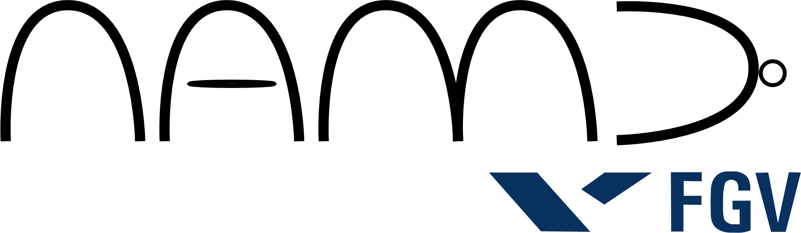

Python: tudo o que voc� j� deveria saber sobre Unicode
�lvaro Justen aka Turicas
IX Confer�ncia Latino-Americana de Software Livre
Foz do Igua�u
18/10/2012
�lvaro Justen aka Turicas
IX Confer�ncia Latino-Americana de Software Livre
Foz do Igua�u
18/10/2012
{twitter.com,
github.com,
youtube.com}/turicas
turicas.info
alvarojusten@gmail.com

emap.fgv.br
github.com/NAMD

www.CursoDeArduino.com.br

.encode: unicode → str
.decode: str → unicode
>>> nome = 'álvaro'
>>> nome2 = u'álvaro'
>>> print len(nome), type(nome)
>>> print nome[0], nome[1]
>>> print len(nome2), type(nome2)
>>> print nome2[0], nome2[1]
>>> print nome == nome2
>>> print nome.decode('utf-8') == nome2
>>> print nome.upper(), type(nome.upper())
>>> maiusculo = nome.decode('utf-8').upper()
>>> print maiusculo, type(maiusculo)
>>> for numero in range(128): ... print numero, chr(numero), ord(chr(numero))
'á':
>>> print 'á'.decode('utf-8').encode('ascii')
Traceback (most recent call last):
File "<stdin>", line 1, in
UnicodeEncodeError: 'ascii' codec can't encode character u'\xe1' in position 0: ordinal not in range(128)
| Tabela 1 | |
|---|---|
| Símbolo | Código |
| A | 1 |
| B | 2 |
| C | 3 |
| D | 4 |
| Tabela 2 | |
|---|---|
| Símbolo | Código |
| A | 4 |
| B | 3 |
| C | 2 |
| D | 1 |
| E | 5 |
>>> print 'python'.decode('utf-8').encode('ascii')
>>> print 'abcdefghijklmnopqrstuvwxyz'.decode('cp1140')
>>> print 'abcdefghijklmnopqrstuvwxyz'.decode('rot13')
>>> print 'abcdefghijklmnopqrstuvwxyz'.encode('base64')
>>> print chr(226).decode('iso-8859-15')
â
>>> print chr(226).decode('iso-8859-7')
β
>>> print chr(226).decode('utf-8')
Traceback (most recent call last):
File "<stdin>", line 1, in
File "/usr/lib/python2.7/encodings/utf_8.py", line 16, in decode
return codecs.utf_8_decode(input, errors, True)
UnicodeDecodeError: 'utf8' codec can't decode byte 0xe2 in position 0: unexpected end of data
>>> from unicodedata import normalize
>>> new_string = normalize('NFKD', u'Álvaro')
>>> print new_string.encode('ascii', 'ignore')
Alvaro
>>> print type(new_string), len(new_string)
<type 'unicode'> 7
>>> print new_string.encode('ascii')
Traceback (most recent call last):
File "<stdin>", line 1, in
UnicodeEncodeError: 'ascii' codec can't encode character u'\u0301' in position 1: ordinal not in range(128)
'errors':
>>> print new_string.encode('ascii', 'replace') # default: 'strict'
A?lvaro
>>> print new_string.encode('ascii', 'xmlcharrefreplace')
Álvaro
>>> print new_string.encode('ascii', 'backslashreplace')
A\u0301lvaro
>>> u'Álvaro'
u'\xc1lvaro'
>>> u'Álvaro'.encode('utf-8').encode('base64')
'w4FsdmFybw==\n'
>>> 'w4FsdmFybw=='.decode('base64')
'\xc3\x81lvaro'
>>> 'w4FsdmFybw=='.decode('base64').decode('utf8')
u'\xc1lvaro'
>>> eh = unichr(0x0065) + \
unichr(0x0301)
>>> eh2 = unichr(0x00e9)
>>> print eh, eh2
>>> print eh == eh2 # WTF?
>>> print eh.encode('utf8')
>>> print eh2.encode('utf8')
>>> # composed
>>> print normalize('NFC', eh)
>>> print normalize('NFC', eh2)
>>> # decomposed
>>> print normalize('NFKD', eh)
>>> print normalize('NFKD', eh2)
>>> len('álvaro')
7
>>> len(u'álvaro')
6
>>> len('álvaro')
6
unicode → str
str → bytes
Ctrl + Shift +
u + codepoint
chardet pode ajudar unicode
(print usa sys.stdout.encoding quando
recebe objeto unicode)
# coding: ... (PEP-0263)
codecs.open (Python 2)
>>> print unicodedata.name(u'Á')
LATIN CAPITAL LETTER A WITH ACUTE
>>> nome = unicodedata.name(u'Á')
>>> simbolo = unicodedata.lookup(nome)
>>> print simbolo, type(simbolo)
Á <type 'unicode'>
>>> print u'\N{LATIN CAPITAL LETTER A WITH ACUTE}'
Á
encodings e codecs
(biblioteca padrão)
u'\u03b2') ![PythonBrasil[8]](images/pythonbrasil.png)
?

{twitter.com,
github.com,
youtube.com}/turicas
turicas.info
alvarojusten@gmail.com
turicas.info/slides/python-unicode